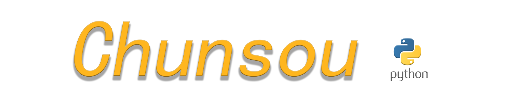

介绍
Chunsou（春蒐），Python编写的多线程Web指纹识别工具，适用于安全测试人员前期的资产识别、风险收敛以及企业互联网资产摸查。目前主要功能为针对Web资产进行指纹识别，目前指纹规则条数约 10000+，辅助功能包括子域名爆破和FOFA、Hunter资产收集。工具开发初衷为辅助网络安全人员开展测试工作，提高资产识别和管理的效率。

项目信息
技术栈：Python
Github地址：https://github.com/Funsiooo/chunsou
特点
Chunsou（春蒐）支持多线程扫描，默认线程为50，可根据需求指定线程数；可联动oneforall进行子域名爆破；支持调用 fofa api 进行资产收集；自定义流量代理；指定输出结果路径。
使用
安装
1
2
3
| git clone https://github.com/Funsiooo/chunsou
cd chunsou
python3 -m pip install -r requirements.txt
|
具体使用指令
1
2
3
4
5
6
7
8
9
10
11
12
13
14
15
16
17
18
19
20
21
22
23
24
25
26
27
28
29
| # 单目标指纹识别
python3 chunsou.py -u http://example.com
# 多目标指纹识别（默认只输出成功请求的结果，报错url不显示，若需要显示报错信息加上 -e ）
python3 chunsou.py -f urls.txt
# 单目标子域名爆破(目前调用 oneforall 进行子域名爆破)
python3 chunsou.py -du example.com
# 多目标子域名爆破
python3 chunsou.py -df domains.txt
# 调用 fofa api 进行资产收集,需要在 /modules/config/config.ini 进行 fofa api key 配置
python3 chunsou.py -fo domain="example.com"
# 调用 hunter api 进行资产收集,需要在 /modules/config/config.ini 进行 hunter api key 配置
python3 chunsou.py -hunter domain="example.com"
# 输出显示 fofa hunter 基本搜索语法
python3 chunsou.py -tip
# 指定线程（默认50）
python3 chunsou.py -u http://example.com -t 100
# 指定输出结果格式（txt、xlsx）
python3 chunsou.py -f urls.txt -o result.xlsx
# 代理流量（http、https、socks5）
python3 chunsou.py -f urls.txt -p http://127.0.0.1:7890
|

 微信
微信 支付宝
支付宝